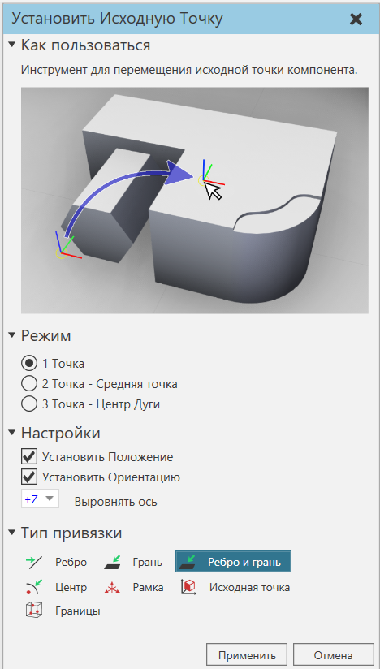
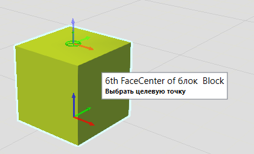
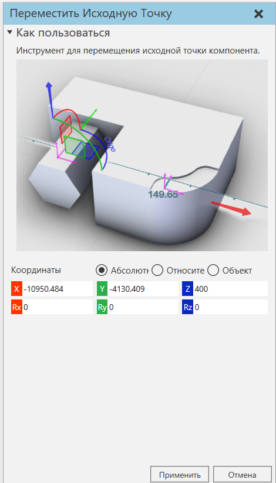
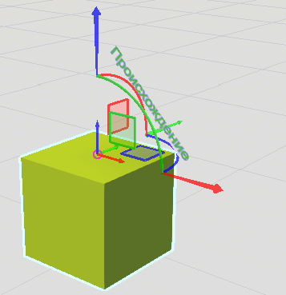

Редактирование исходной точки компонента |
|
Исходная точка компонента может быть привязана и перемещена в другое место в трехмерном мире. Привязка позволяет выбрать новое местоположение для начала компонента. 1.В 3D-мире выберите компонент, который вы хотите отредактировать. 2.На вкладке Главная в группе Исходная точка нажмите кнопку Привязка.  3.В панели задач Установить Исходную Точку отредактируйте один или несколько параметров. 4.В 3D-мире, в зависимости от настройки режима, нажмите на одно или несколько мест.  5.На панели задач Установить Исходную Точку нажмите Применить, чтобы подтвердить новое местоположение происхождения выбранного компонента.
Переместить позволяет использовать манипулятор для определения нового местоположения начала координат компонента. 1.В 3D-мире выберите компонент, который вы хотите отредактировать. 2.На вкладке Главная в группе Исходная точка нажмите кнопку Переместить.  3.В трехмерном мире используйте стрелки манипулятора для перемещения начала координат выбранного компонента.  4.На панели задач Переместить Исходную Точку нажмите Применить, чтобы подтвердить новое местоположение начала выбранного компонента. |